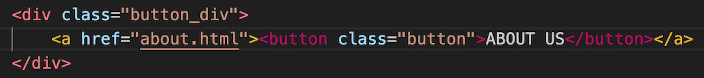

T5 - GRUNDLÆGGENDE INDHOLD
Beskrivelse af tema
I temaet grundlæggende indhold lærte vi om indholdsproduktion og animeret vektorgrafik. Vi lærte at klippe og skabe video content, lave animerede hero-sektioner og samarbejdede med en privatperson med en passion samt en virksomhed, hvor vi som gruppe skabte et redesign af virksomhedens website.
Beskrivelse af opgave
Dette tema bestod af to opgaver. Undervejs i processen brugte vi spejlreflekskamera og knaphulsmikrofon for at dokumentere indhold til content.
Passionsite
Den første opgave gik ud på at lave et website til en person med en passion. Jeg anvendte Adobe Premiere Pro til at klippe video- og lydmateriale til en “One Minute Wonder”-video. Jeg brugte B-rolls for at skabe en mere naturlig visuel overgang i videoen.
Illustration af arbejdet i Adobe Premiere Pro
Videoen blev implementeret på mit passionsite både via video-tag, der linker til en URL, og iframe-tag, der henter en mp4-fil fra en lokal mappe, for at illustrere forskellige måder at gøre det på.
HTML, video og iframe
For at skabe en spændende hero-section brugte jeg Adobe After Effects til at lave animeret vektorgrafik. Herfra eksporterede jeg filen som LottieFile for at skabe et mere bæredygtigt site. Desværre kom ikke alle elementer med i LottieFile. Jeg ville gerne have haft, at min baggrund fadede gradvist efter overskrift/logo-animationen var færdig.
Illustration af Hero Section, LottieFile
Illustration af Hero Section, mp4-fil
Virksomhedssite
Den anden opgave i temaet var at redesigne en virksomheds website. Vores mål var at gøre det mere tydeligt, hvad virksomheden laver, hvad formålet er, og hvem deres målgruppe er. Undervejs i gruppeprocessen brugte vi forskellige værktøjer for at dokumentere og samarbejde bedst muligt.
Vi brugte Trello for at få et overblik over opgaverne, samt lavede en daglig SCRUM for at lave en status og fordele opgaver løbende. Vi anvendte Figma til at dokumentere research- og designprocessen, og Git/GitHub til at dele filer og arbejde i VS Code.
Vi udførte 5-sekunders test og BERT test af virksomhedens eksisterende website og efterfølgende af vores redesign, hvilket bekræftede os i, at vores site var blevet mere brugervenligt end virksomhedens eksisterende website.
Det sværeste ved denne opgave var at bruge GitHub i fælles kodeproces. Vi skulle lige forstå, hvordan det fungerede, og vigtigheden af at fordele opgaver, så man ikke endte med at overskrive hinandens arbejde.
Efter denne opgave føler jeg mig tryggere i designprocessen og har fået et bedre overblik over de forskellige trin på vejen hen til målet. Et par af mine hovedansvarsområder var design af klikbar prototype i Figma, BERT-test, menu/burgermenu og knapper. Jeg lærte, at man ikke kan bruge button-tag som child-container i en a-tag, som er en parent-container, i forbindelse med valideringen af det redesignede site.
HTML, button
Error i validering af button
Beskrivelse af metode
I denne opgave blev vi introduceret til testmetoden BERT. Jeg udførte testen ved at lave et spørgeskema i Google Forms, som gav os tilbagemeldinger, der signalerede, at vi havde formået at opnå flere af målene med redesignet. Vores site var blevet mere gennemsigtigt, imødekommende og lettere at navigere rundt i.
Klik på knappen for at komme til opgaven: